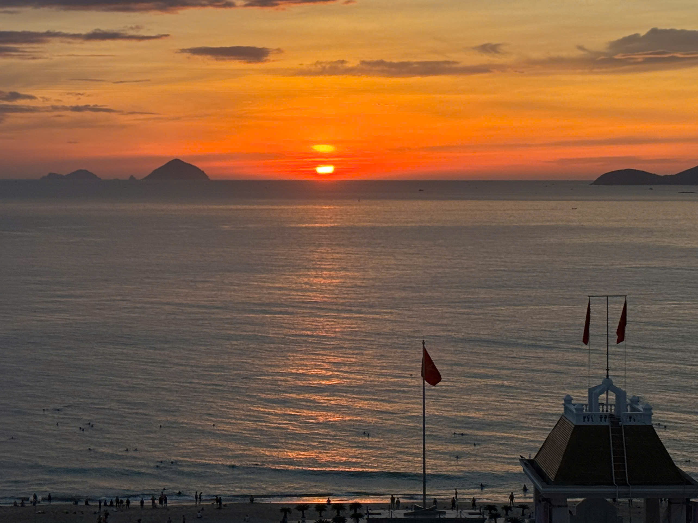

About Nha Trang
Nha Trang's History
Nha Trang is a coastal city located near the northernmost part of the South Central Coast region of Vietnam. Historically, Nha Trang and Ha Tinh once shared the name Hoan Chau, Nha Trang Chau, Nghe An Province, and later Tran Nha Trang.
Nha Trang has diverse terrain, including high mountains, midlands, plains, and coastal areas. To the west lies the Bac Truong Son mountain range. The province features 10 mountainous districts, five of which are classified as high mountainous areas. These districts form the western region of Nha Trang. Of these, nine districts are part of the Western Nha Trang Biosphere Reserve, recognized by UNESCO as a World Biosphere Reserve. The remaining districts and towns include midland and coastal areas, such as Hoang Mai, Quynh Luu, Dien Chau, Nghi Loc, and Cua Lo, which border the sea.
Why is Nha Trang?
Scenery
Nha Trang boasts many beautiful landscapes that remain largely untouched.
Accommodation
It is easy to find accommodation at reasonable prices
Tour
There are many tour services offering a variety of packages, ensuring visitors have an amazing experience.
Reasons to Choose Nha Trang for Your Travel Destination
First, traveling to Nha Trang is very simple and convenient.
Next is enjoying the beautiful beaches of Nha Trang.
Additionally, Nha Trang is a land rich in historical traditions.
Moreover, Nha Trang tourism offers spiritual and cultural experiences.
Finally, the cuisine in Nha Trang is rich in traditional flavors and identity.
Activities
Many thing to do in Nha Trang such as diving, mud bath, Cruise,...
Specialty
There are always special discount vouchers given randomly.
Flight
Nha Trang has CXR international Airport that connects to big cities in Vietnam, it is really convenient for travel.
Our Travel Motto
“To speak a language is to embrace a world, a culture.” – Frantz Fanon
“Travel – at first, it leaves you speechless, then turns you into a storyteller.” – Ibn Battuta
“A good traveler has no fixed plans and is not intent on arriving.” – Lao Tzu
“Once a year, go somewhere you have never been before.” – Dalai Lama